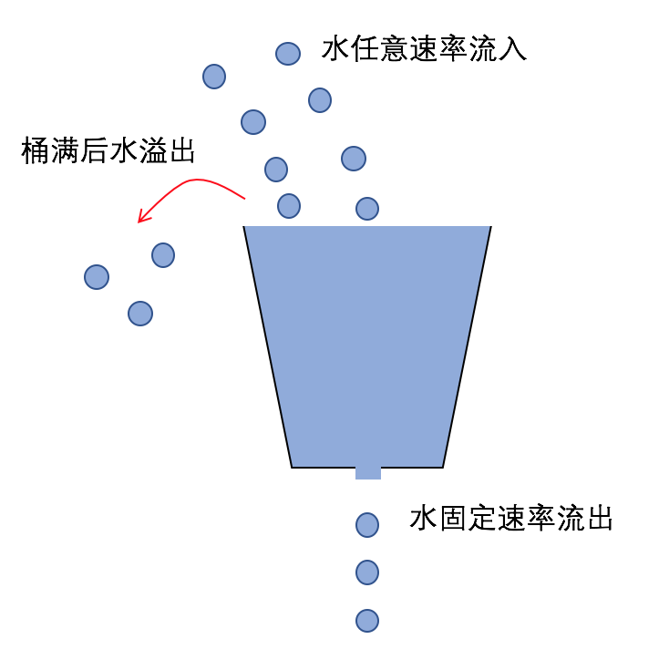
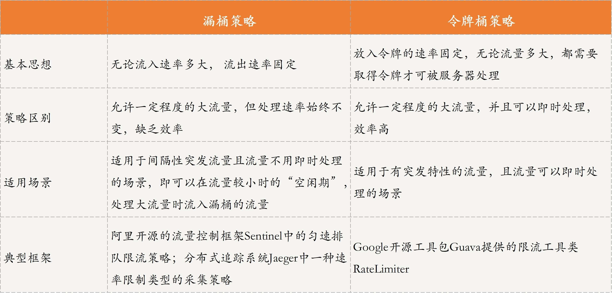

- 00 开篇词 四纵四横，带你透彻理解分布式技术.md.html
- 01 分布式缘何而起：从单兵，到游击队，到集团军.md.html
- 02 分布式系统的指标：啥是分布式的三围.md.html
- 03 分布式互斥：有你没我，有我没你.md.html
- 04 分布式选举：国不可一日无君.md.html
- 05 分布式共识：存异求同.md.html
- 06 分布式事务：All or nothing.md.html
- 07 分布式锁：关键重地，非请勿入.md.html
- 08 分布式技术是如何引爆人工智能的？.md.html
- 09 分布式体系结构之集中式结构：一人在上，万人在下.md.html
- 10 分布式体系结构之非集中式结构：众生平等.md.html
- 11 分布式调度架构之单体调度：物质文明、精神文明一手抓.md.html
- 12 分布式调度架构之两层调度：物质文明、精神文明两手抓.md.html
- 13 分布式调度架构之共享状态调度：物质文明、精神文明多手协商抓.md.html
- 14 答疑篇：分布式事务与分布式锁相关问题.md.html
- 15 分布式计算模式之MR：一门同流合污的艺术.md.html
- 16 分布式计算模式之Stream：一门背锅的艺术.md.html
- 17 分布式计算模式之Actor：一门甩锅的艺术.md.html
- 18 分布式计算模式之流水线：你方唱罢我登场.md.html
- 19 分布式通信之远程调用：我是你的千里眼.md.html
- 20 分布式通信之发布订阅：送货上门.md.html
- 21 分布式通信之消息队列：货物自取.md.html
- 22 答疑篇：分布式体系架构与分布式计算相关问题.md.html
- 23 CAP理论：这顶帽子我不想要.md.html
- 24 分布式数据存储系统之三要素：顾客、导购与货架.md.html
- 25 数据分布方式之哈希与一致性哈希：“掐指一算”与“掐指两算”的事.md.html
- 26 分布式数据复制技术：分身有术.md.html
- 27 分布式数据之缓存技术：“身手钥钱”随身带.md.html
- 28 分布式高可靠之负载均衡：不患寡，而患不均.md.html
- 29 分布式高可靠之流量控制：大禹治水，在疏不在堵.md.html
- 30 分布式高可用之故障隔离：当断不断，反受其乱.md.html
- 31 分布式高可用之故障恢复：知错能改，善莫大焉.md.html
- 32 答疑篇：如何判断并解决网络分区问题？.md.html
- 33 知识串联：以购买火车票的流程串联分布式核心技术.md.html
- 34 搭建一个分布式实验环境：纸上得来终觉浅，绝知此事要躬行.md.html
- 特别放送 Jackey：寄语天涯客，轻寒底用愁.md.html
- 特别放送 分布式下的一致性杂谈.md.html
- 特别放送 崔新：追根溯源，拨开云雾见青天.md.html
- 特别放送 徐志强：学习这件事儿，不到长城非好汉.md.html
- 特别放送 那些你不能错过的分布式系统论文.md.html
- 结束语 为什么说提升职业竞争力要从尊重、诚实开始？.md.html
- 捐赠
29 分布式高可靠之流量控制：大禹治水，在疏不在堵
你好！我是聂鹏程。今天，我来继续带你打卡分布式核心技术。
在上一篇文章中，我带你学习了分布式高可靠中的负载均衡。负载均衡的核心在于，将用户请求均匀分配到多个处理服务器处理，以解决单个服务器的单点瓶颈问题。但，如果用户请求数非常多的话，即便实现了负载均衡，服务器能力达到上限，还是无法处理所有的用户请求。
比如，类似双十一、双十二的秒杀场景，用户流量突增时，即使做了负载均衡，我们仍然会感受到点击抢购时，需要等待较长的时间。这背后的原理是什么呢？
你是不是想到了，这是因为系统控制了用户的请求量呢？没错，这就是今天我们要一起打卡的流量控制技术。
什么是流量控制？
说到流量控制，如果你学过计算机网络的话，第一反应肯定是网络传输中的流量控制。网络传输中的流量控制，就是让发送方发送数据的速率不要太快，让接收方来得及接收数据，具体的实现方法就是滑动窗口。
简单来讲，滑动窗口指的是，在任意时刻，发送方都维持一个连续的允许发送的数据大小，称为发送窗口；接收方也会维持一个连续的允许接收的数据大小，称为接收窗口。每次发送方给接收方发送数据后，必须收到接收方返回的确认消息，发送窗口才可向后移动，发送新的数据。
接下来，我们通过一个简单的例子，来看看滑动窗口在网络流量控制中，是如何发挥作用的吧。如图所示，发送窗口和接收窗口大小均为1，发送方发送数据D1后，只有接收到来自接收方的确认消息ACK，发送窗口才可向后移动，即发送方才可以发送后续数据D2。
这是网络传输中的流量控制，那么具体到分布式系统中，流量控制又是什么呢？
在前面提到的双十一、双十二秒杀场景中，用户流量突增，在这种高并发、大流量的情况下，服务器的处理能力成为电商系统的瓶颈，处理不好就会导致系统崩溃，服务不可用。而分布式系统中的流量控制，就是解决这类问题的一种关键技术。
通俗地说，分布式流量控制就是在分布式系统下，控制每个服务器接收的请求数，以保证服务器来得及处理这些请求，也就是说尽可能保证用户请求持续地被处理，而不是让大量的用户请求“阻塞”在服务器中，等待被执行。这就好比“大禹治水，在疏不在堵”。
接下来，我们就一起学习下分布式系统常用的流量控制策略吧。
分布式系统流量控制策略
还记得第21篇文章中讲到的消息队列吗？消息队列就是实现流量控制的一种方法，通过一个消息队列来存放用户的消息，然后服务器到消息队列中逐个消费，就可以避免消息过多时服务器处理不过来的情况。
除此之外，分布式系统的流量控制策略还有很多，常用的主要包括两种：漏桶策略和令牌桶策略。
漏桶策略
相信你看到“漏桶”两个字，头脑里应该已经有了一个漏桶的样子。确实，名字就已经很形象地说明了这种策略的含义。
如下图所示，有一个固定容量的水桶，桶底有一个小洞，水桶可以接收任意速率的水流，但无论水桶里有多少水，水从小洞流出的速率始终不变，桶里的水满了之后，水就会溢出。

漏桶策略借鉴上述原理，无论用户请求有多少，无论请求速率有多大，“漏桶”都会接收下来，但从漏桶里出来的请求是固定速率的，保证服务器可以处理得游刃有余。当“漏桶”因为容量限制放不下更多的请求时，就会选择丢弃部分请求。这种思路其实就是一种“宽进严出”的策略。
比如，在某段时间内，系统每秒会有10个用户发出请求，但这些请求经过漏桶后，每秒始终只流出2个请求，也就是说服务器每秒最多处理2个请求。这样的话，无论请求速率有多大，都能达到限流的目的，避免服务器在短暂时间内需要处理大量请求，但由于处理能力受限导致系统崩溃，从而保证了系统的高可靠。
这种策略的好处是，做到了流量整形，即无论流量多大，即便是突发的大流量，输出依旧是一个稳定的流量。但其缺点是，对于突发流量的情况，因为服务器处理速度与正常流量的处理速度一致，会丢弃比较多的请求。但是，当突发大流量到来时，服务器最好能够更快地处理用户请求，这也是分布式系统大多数情况下想要达到的效果。
所以说，漏桶策略适用于间隔性突发流量且流量不用即时处理的场景，即可以在流量较小时的“空闲期”，处理大流量时流入漏桶的流量；不适合流量需要即时处理的场景，即突发流量时可以放入桶中，但缺乏效率，始终以固定速率进行处理。
目前，漏桶算法已经用于很多框架了，比如阿里开源的流量控制框架Sentinel中的匀速排队限流策略，就采用了漏桶算法；分布式追踪系统Jaeger中，有一种采集策略是速率限制类型，内部使用的也是漏桶算法等。
令牌桶策略
令牌桶策略，也是一个很形象的名字，指的是桶里放着很多令牌，请求只有拿到令牌才能被服务器处理。
如图所示，有一个固定容量的存放令牌的桶，我们以固定速率向桶里放入令牌，桶满时会丢弃多出的令牌。每当请求到来时，必须先到桶里取一个令牌才可被服务器处理，也就是说只有拿到了令牌的请求才会被服务器处理。所以，你可以将令牌理解为门卡，只有拿到了门卡才能顺利进入房间。
同样的，我们通过一个具体的例子，来加深对令牌桶策略的理解吧。
假设，令牌以每秒3个的速率放入到令牌桶中，桶的容量为10。通常情况下， 每秒会有2个用户请求，请求到来时就会到桶里取一个令牌，由于请求的速率低于放令牌的速率，因此令牌桶里令牌会逐渐增多，直到达到桶的容量。超过桶容量后，令牌会被丢弃。
当大流量到来时，比如某个时刻来了10个请求，此时桶里有10个令牌，因此，请求都会被服务器处理；但如果来的请求数不止10个，令牌会被取完，多余的请求取不到令牌，也就没办法及时被服务器处理，需要等待令牌。
通过上述的例子，就能看出这种策略的好处：当有突发大流量时，只要令牌桶里有足够多的令牌，请求就会被迅速执行。通常情况下，令牌桶容量的设置，可以接近服务器处理的极限，这样就可以有效利用服务器的资源。因此，这种策略适用于有突发特性的流量，且流量需要即时处理的场景。
在实际使用中，令牌桶算法也很常见。比如，Google开源工具包Guava提供的限流工具类RateLimiter，就是基于令牌桶算法来完成限流的。
两种策略对比
以上就是漏桶策略和令牌桶策略的核心原理了，接下来我们通过一张表格对比下这两种策略吧。

Sentinel流量控制工作原理
我们都知道阿里的流量控制做得很好，特别是双十一、抢购等情况下。接下来，我以阿里开源的流量控制框架Sentinel为例，与你进一步介绍流量控制的工作原理。
Sentinel的核心是，监控应用的并发线程数或QPS（请求数 /每秒）指标，当达到系统设定的阈值时，Sentinel可以采取一定的策略对流量进行控制，以避免应用被瞬时高流量击垮，从而保证应用高可靠。
为此，在Sentinel中，关于流量控制有两种方式：一种是通过并发线程数进行流量控制，另一种是通过QPS指标进行流量控制。
首先，我们看一下通过并发线程数进行流量控制。
要理解这种限流方式，我需要先带你搞清楚什么是线程池。
我们知道，过多的线程会消耗非常多的系统资源，包括线程资源消耗、线程调度消耗等。为了解决这个问题，我们引入了线程池。线程池维护了多个启动着的线程，随时等待着去执行系统分配的任务，即系统每次需要处理任务时，可以直接从线程池中取线程，从而避免了创建和销毁线程的时间和资源等消耗。
同一时刻每个线程只能执行一个任务或请求，因此，可以通过并发线程数进行流量控制。我们看一个案例吧。
如图所示，假设现在线程池中有3个线程也就是说，最大并发处理数为3，现在有2个请求Q1和Q2到来，由于请求数少于线程数，因此请求可以被并发执行。线程池中启动着的线程1和线程2会进行相应的处理，而不会创建新线程，除此之外，线程处理完请求后也不会被销毁，而是回到线程池中继续等待新的请求。
但如果现在同时有4个请求到来，那么只有3个请求可以被并发处理，而剩下的一个请求要么丢弃，要么等待空闲线程。
在分布式系统中，每个请求都会由一个线程去进行处理。当请求太多系统处理不过来时，意味着线程池可能已经被耗尽（线程池中无空闲线程），因此当请求过多时，执行请求的并发线程数自然会随之增加，当超过一定的阈值（比如线程池中线程总数）时，需要采取一定的策略来进行流量控制。
在Sentinel中，就采用了直接拒绝的方式，即新来的请求会直接拒绝。
然后，我们再看一下通过QPS指标进行流量控制吧。
QPS是指每秒的请求数，大流量也就意味着QPS大。当QPS达到阈值时，Sentinel提供了三种流量控制策略，分别是直接拒绝、预热（Warm Up）和匀速排队。
直接拒绝，是最直接也是最暴力的方式，与并发线程数流量控制采取的方式一致，就是当QPS达到系统设定的阈值时，直接拒绝新来的请求。
这种策略乍一听起来确实不是很好，但对于系统处理能力确切已知的情况（即阈值设定为每秒能接受的最大处理请求数），却非常实用。当请求超出阈值时，可以直接拒绝，因为系统已经没有更多的能力来处理多余的请求了。因此，该策略适用于对系统处理能力确切已知的场景。
接下来，我们看看预热。当系统的QPS长期处于一个较低水平时，一旦发生流量骤增，如果直接让系统每秒处理大量的请求，可能会因为服务器处理能力不足，导致系统崩溃。因此，Sentinel提供了一种“预热”机制，让系统的QPS缓慢增加，在一定的时间内逐渐增加到上限。
下面以一个例子为例，带你进一步理解预热的原理。如下图所示，假设通常情况下系统每秒处理3个请求，即QPS=3，当用户请求增加时，系统每秒处理的请求数相应增加，但不会一下子提高很多。比如，每秒增加1个处理请求，逐步达到QPS=10的处理上限，并不再继续增加，从而避免大流量一下子导致系统故障。
可以看出，预热这种策略有点像是一种特殊的令牌桶：放令牌的速率通常保持在一个较低的水平，当流量突增时，放令牌的速率不会一下子提高到最高水平，而是会慢慢增加，直到增加到最大速率则不可再增加。因此，该策略与令牌桶策略的适用场景类似，即适用于具有突发特性的流量，且流量可以即时处理的场景。
匀速排队的思想，其实本质就是漏桶策略。它会严格控制系统每秒处理的请求数，请求数很多时，请求之间的间隔也会保持一致。
如图所示，当QPS=5时，每隔200ms才允许服务器处理下一个请求。假设请求队列中有10个请求瞬间到达，服务器不会一下子全处理完，而是按照请求的顺序，每200ms处理一个请求，直到处理完所有请求。这时，处理的请求就像是在匀速排队，因此得名。
该策略中，系统会设定一个时间间隔T，假设最大排队时长设置为6T，上次请求通过的时刻为t1。当新的请求在t2时刻到来的话，则进行判断，首先查看是否还有其他请求在排队。如果没有请求在排队，分两种情况：
- 当t2 - t1的值大于或等于时间间隔T，请求可以通过；
- 当t2 - t1的值小于T时，需要等待，直到t2 - t1的值达到时间间隔T时，才可以让请求通过。
而如果新请求到来时，已经有请求在排队，就需要计算该新请求的预期通过时间。比如，有3个请求在排队，则该新请求预期通过时间为t1+4T，因为需要等到在该请求前面的请求都通过后该请求才可通过，且两个请求通过的时间间隔必须达到T才可以。
另外，若排队的请求过多，新来的请求预期等待时间超出最大排队时长，即等待时间超过6T时，则直接拒接这个请求。
现在我想你应该理解了为什么说匀速排队策略本质就是漏桶策略了吧。因此，匀速排队的适用场景与漏桶策略类似，即适用于间隔性突发流量且流量不用即时处理的场景。
知识扩展：什么是拥塞控制？它与流量控制的区别是什么？
其实，在分布式领域拥塞控制与流量控制的区别还是蛮大的。为什么这么说呢？
今天，我们讲述的流量控制，主要是指业务上的流量，即用户请求。而拥塞控制通常针对的是网络上传输的数据，即网络上数据传输出现拥塞时应当如何控制。所以，这两个概念不是一回事儿。
但是，对于网络上数据的传输而言，流量控制与拥塞控制非常容易混淆。
网络数据传输中，流量控制是指控制发送方和接收方的传输和接收速率在双方都可以接受的范围，通常使用的方法是滑动窗口；而拥塞控制是通过检测网络状况，随时疏通网络，避免网络中过多数据堆积，导致无法传输数据，包括慢启动与拥塞避免方法。如果你想深入了解拥塞控制的相关内容，可以自行查阅计算机网络的相关书籍。
总结
今天，我主要带你学习了分布式高可靠技术中的流量控制。
首先，我以网络传输中的流量控制和电商系统的例子，和你引入了分布式系统中的流量控制，即控制每个服务器的请求数，以保证处理请求所需计算能力在服务器处理能力的上限之内，从而避免系统崩溃。
然后，我为你介绍了常见的流量控制策略，包括漏桶策略和令牌桶策略。其中，漏桶策略的核心是“宽进严出”，发送给服务器进行处理的请求速率固定，以避免超过服务器处理能力上限，导致系统崩溃，但这种方式不适合突发流量增加的场景。令牌桶策略的核心是，只要桶里有令牌，请求就可以被处理，只要在服务器处理能力内即可，所以适用于处理及时且处理速率非固定的场景。
最后，我和你分享了阿里开源的Sentinel流量控制，并介绍了通过并发线程数和通过QPS指标进行流量控制的两种方式。
最后，我再通过一张思维导图来归纳一下今天的核心知识点吧。
加油，相信通过本讲的学习，你对分布式系统中的流量控制有了一定的理解，也可以进一步对电商系统中抢购、秒杀中的流量控制问题进行分析了。加油，行动起来吧！
思考题
除了漏桶策略和令牌桶策略，你还知道哪些流量控制策略吗？它们的原理是什么呢？
我是聂鹏程，感谢你的收听，欢迎你在评论区给我留言分享你的观点，也欢迎你把这篇文章分享给更多的朋友一起阅读。我们下期再会！
© 2019 - 2023 Liangliang Lee. Powered by gin and hexo-theme-book.